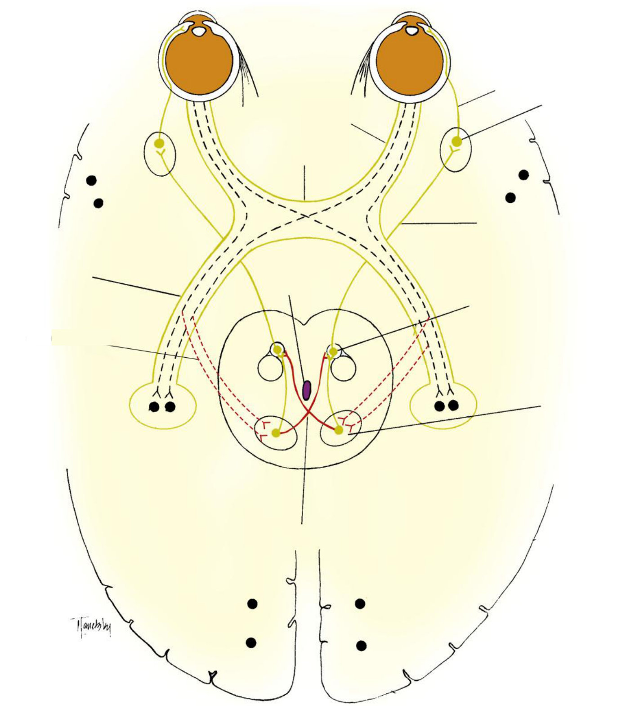
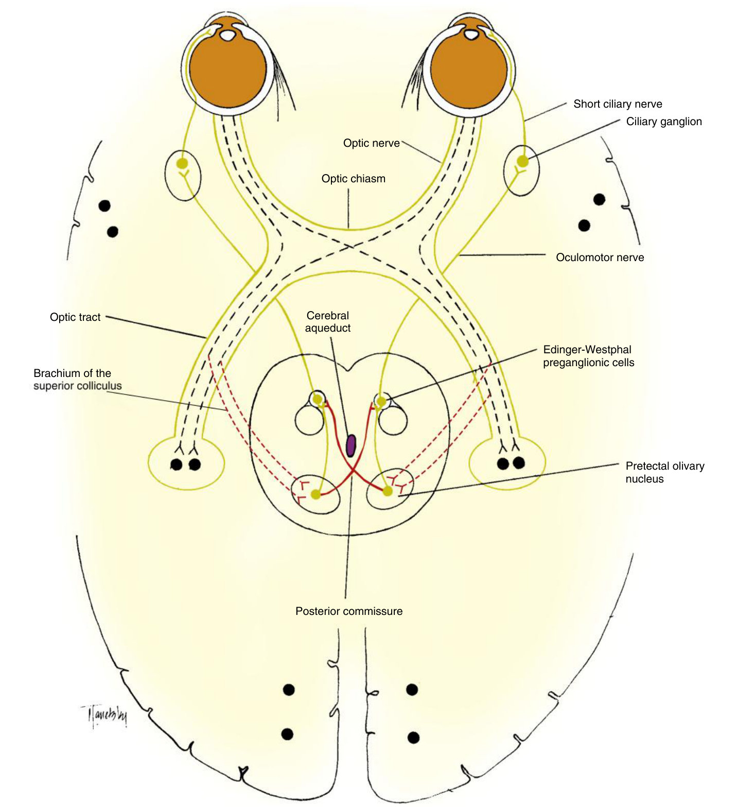
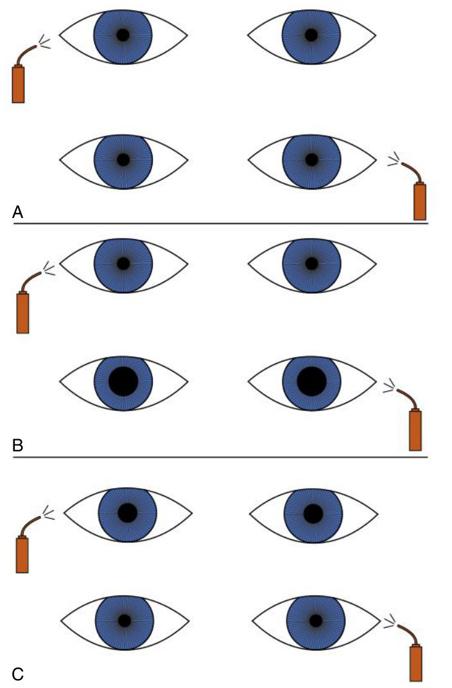
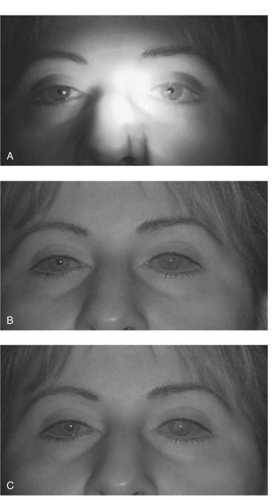
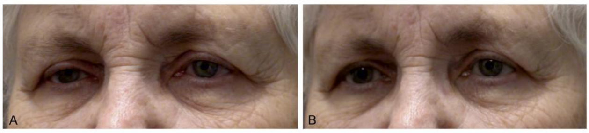

Which pupil is the abnormal one?
Every pupil case reduces to one question asked in the right order — and the answer starts with whether the difference is worse in the dark or in the light.
Given an anisocoria, decide which pupil is abnormal, name the likely cause, and say which drop you would use to prove it.
Ten objectives across four guideline slides: the afferent, central and efferent structures of the reflex · the characteristics of an RAPD and how the pupils respond · the causes of an RAPD and how they present · the near pathway and how it differs · pupils with a lesion of the central fibres · pupils with a lesion anywhere in the parasympathetic pathway · the same for the sympathetic pathway · the pharmacologic testing for Horner syndrome · the characteristics of physiologic anisocoria · and how lesions affect the direct, consensual and near responses and the swinging flashlight test.
Exam guidelines · p. 7–8
1. The light pathway, in three limbs
The pathway crosses twice: nasal retinal fibres in the chiasm, and about half the fibres of each pretectal nucleus in the posterior commissure. So each Edinger-Westphal group hears from both eyes — that is the consensual response.
Note too that the pupillary fibres leave the optic tract before the LGN. Everything downstream of that belongs to vision, not to the pupil.
TB 14 · p. 229, 231 · Handout 11 · p. 1–2

Answer: Fig. 14.10 with labels

Short ciliary nerve · ciliary ganglion · optic nerve · optic chiasm · oculomotor nerve · optic tract · cerebral aqueduct · Edinger-Westphal cells · brachium of the superior colliculus · pretectal olivary nucleus · posterior commissure.
2. The RAPD
An afferent lesion weakens the direct response of its own eye and the consensual response of the other. Light into the healthy eye still works normally in both. Crucially the pupils stay equal in size — there is no anisocoria, because the weakened signal still reaches both sides equally.
Patient fixates in the distance, so no near response interferes. Swing the light rhythmically, about 2–3 seconds per eye, equally bright each time. Normal: little change as the light switches. RAPD: when the light reaches the affected eye, both pupils dilate; swing back and both constrict. Brighter light reveals subtler defects — record the light level.

| Lesion site | RAPD in which eye | The giveaway |
|---|---|---|
| Retina | same eye | needs a large area of retina |
| Optic nerve | same eye | the commonest site; a small lesion can give a big RAPD |
| Optic tract | contralateral | more crossed than uncrossed fibres; field shows homonymous hemianopia |
| Superior brachium | contralateral | RAPD with a normal visual field — the visual fibres have already left |
Media opacities do not cause one. A dense cataract may even cause an RAPD in the other eye. So an RAPD in a cataract eye means there is retinal or optic nerve disease as well — do not blame the poor vision.
Handout 11 · p. 3 · TB 14 · p. 232
3. Near response, and light-near dissociation
The near response is not a reflex but a synkinesis of three things: convergence · accommodation · miosis. Its afferent limb is completely different from the light one:
It reaches the Edinger-Westphal cells from a ventral direction, bypassing the pretectal route. So a dorsal midbrain lesion cuts the light fibres and spares the near ones: poor light response, brisk near response — light-near dissociation. A near response greater than the best light response is always pathological.
| Argyll Robertson | Dorsal midbrain syndrome | |
|---|---|---|
| Pupils | very small, irregular | normal to mid-dilated |
| Light / near | bilateral light-near dissociation in both | |
| Usual cause | neurosyphilis | pineal abnormality pressing on the back of the midbrain |
TB 14 · p. 229, 232–233 · Handout 11 · p. 4, 6
4. The efferent lesions
| Parasympathetic | Sympathetic (Horner) | |
|---|---|---|
| Affected pupil | larger | smaller |
| Anisocoria worse in | bright light | dim light |
| Light response | poor in that eye | normal — the parasympathetic side is intact |
| Lid | ptosis if CN III (levator) | mild ptosis (Müller) |
| Extras | motility problems; or segmental constriction in a tonic pupil | dilation lag, facial anhidrosis |
A normal pupil dilates within 5 seconds in the dark, using its dilator and relaxing the sphincter. A Horner pupil has no dilator tone and takes 10–20 seconds. So the anisocoria is bigger at 5 s than at 15 s. Physiologic anisocoria shows no lag at all.
TB 14 · p. 236 · Handout 11 · p. 9


Tonic pupil (ciliary ganglion or short ciliary nerves): dilated, poor light response, segmental constriction so the border is irregular, and a near response that survives but is slow and tonic with a long redilation. Idiopathic = Adie, typically a woman of 20–40, 90% with reduced tendon reflexes.
The three Horner neurons and where they break: central (hypothalamus → cord) — stroke, MS · preganglionic (cord → over the lung apex → superior cervical ganglion) — thoracic surgery, chest metastases · postganglionic (carotid → cavernous sinus → orbit) — skull-base fracture, carotid dissection. A painful Horner is an emergency.
5. The drops
| Drop | Acts how | Normal eye | Abnormal eye | Tells you |
|---|---|---|---|---|
| Apraclonidine 0.5–1% | direct alpha agonist, weak alpha-1 | no change or slight miosis | Horner pupil dilates, ptosis improves | Horner: yes / no. Needs ~1–2 weeks of denervation |
| Cocaine 2–10% | indirect: blocks reuptake | dilates in 30–60 min | little or no dilation | Horner: yes / no |
| Hydroxyamphetamine 1% | indirect: releases stored norepinephrine | dilates | dilates if preganglionic; no dilation if postganglionic | where the lesion is |
| Pilocarpine 0.125% | direct cholinergic | little or nothing | tonic pupil constricts strongly (supersensitive) | tonic pupil |
| Pilocarpine 1% | direct cholinergic | constricts | no constriction = pharmacologically dilated | drug-blocked receptors |
The lecture taught apraclonidine; the textbook adds cocaine and hydroxyamphetamine. Know apraclonidine cold and the other two by what they prove.
TB 14 · p. 228, 234–237 · Handout 11 · p. 8, 11
6. Sorting any anisocoria — the algorithm
Worse in dim light? → the smaller pupil is abnormal, a sympathetic problem.
· dilation lag, ptosis, anhidrosis, apraclonidine dilates it → Horner syndrome
· under 1 mm, no lag, dilates equally in the dark → physiologic anisocoria (about 20% of people; may switch sides; fluctuates with stress)
Worse in bright light? → the larger pupil is abnormal, a parasympathetic problem.
· ptosis + motility problems → CN III palsy
· slow tonic near response, segmental constriction, 0.125% pilocarpine constricts → tonic pupil
· no response even to 1% pilocarpine → pharmacologically dilated
TB 14 · p. 233–236 · Handout 11 · p. 7–11
An efferent lesion does not produce an RAPD. The signal still arrives — only the sphincter cannot act. With a CN III palsy or a tonic pupil the affected pupil barely moves, so watch the other pupil: it still reports the afferent input from both eyes.
7. Drill
More: Mixed quiz — Chapter 11 · pictures only: Image quiz — Chapter 11.
Read study script § chapter 11, section 7 — the lesion-to-responses table — then Handout 11 pages 7–11. Work three invented cases a day out loud until the algorithm runs without you thinking about it.
Ask your teacher — "why does an efferent lesion not give an RAPD?", "give me five anisocoria cases and mark me", "explain dilation lag with the clock times again".